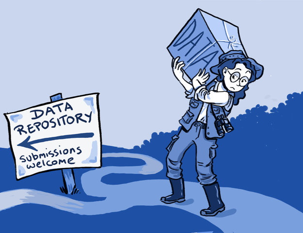

DANDI: distributed archives for neurophysiology data integration
Yaroslav O. Halchenko @yarikoptic @yarikoptic
|
|
|
Center for Open Neuroscience Department of Psychological and Brain Sciences Center for Cognitive Neuroscience Dartmouth College 
|


Challenge: Develop a BRAIN Initiative Archive

{kind=link}
borrowed from socialsciencespace.com
Born in 2019
What data is in DANDI

Ingredients needed to build an archive
- People (users are people too!)
- Standards
- FOSS
- Automations


Standards make DANDI FAIR for People

Standard for neurophysiology data (sessions): NWB

Just ask Oliver & Ryan around the corner: https://www.nwb.org/nwb-neurophysiology/
Standard for neural datasets: BIDS
Gorgolewski, K. J., Auer, T., Calhoun, V. D., Craddock, R. C., Das, S., Duff, E. P., Flandin, G., Ghosh, S. S., Glatard, T., Halchenko, Y. O., Handwerker, D. A., Hanke, M., Keator, D., Li, X., Michael, Z., Maumet, C., Nichols, B. N., Nichols, T. E., Pellman, J., Poline, J.-B., Rokem, A., Schaefer, G., Sochat, V., Triplett, W., Turner, J. A., Varoquaux, G., and Poldrack, R. A. (2016). The brain imaging data structure, a format for organizing and describing outputs of neuroimaging experiments. Scientific Data, 3:160044
BIDS ...
- standardizes at the level of the dataset
- is intended to be boring: you have seen one BIDS dataset -- you have seen them all!
- e.g., skim through https://github.com/OpenNeuroDatasets
- is both human- and machine- friendly
- From 1.7.0 WiP to make BIDS specification itself machine readable!
- In part inspired by the NWB schema. Cross-standard work is ongoing
- Schema avoids necessity for hard-coding BIDS in client software
- Questions about schema/standards versioning and upgrades remain a taboo
- compliance could be automatically verified using bids-validator BIDS-App
- is enhanced through BIDS Enhancement Proposals (BEPs),
we participate in them to improve BIDS for DANDI archive- BEP028: Provenance (WiP)
- BEP031: Microscopy (done)
- BEP032: Animal electrophysiology (WiP)

One more "Standard": DANDI schema

Overall: Standards ...
- are needed for FAIR archives
- are a common language for users and computers
- can compose of other standards
- are evolving
DANDI is a FOSS platform

DANDI integrates with external resources

How do we ensure correct operation?
Collaborate and automate!
- Delegate data validation to standards
- work with standards developers/communities
- Impose additional requirements through harmonized schema
Unit- and integration- test software components
- an entire archive can be instantiated on any machine with docker-compose
- Releases and deployment of the components are automated on GitHub

con/tinuous archives all the logs and builds


Dandisets are converted into DataLad datasets and pushed to GitHub
- data resides on S3 (and some institutional backups)
- provides aggressive testing of API and data access

Webshots of all dandisets for timing and smoke testing
Trivia: this setup was used to quickly troubleshoot OHBM 2021 online conference deficiencies

Testing trivial IO across all dandisets

DANDI ...
to accommodate growing width (different data types) and size of neural data- provides range of interfaces for data contribution and access:
API, Python CLI client/library, direct S3, FSSPEC, DataLad / git-annex - heavily relies on, and contributes to the development of various standards:
NWB, BIDS, OME-Zarr, etc - has modular architecture to reuse and contribute to various FOSS projects:
(used to: girder,) h5py, git-annex, DataLad, con/tinuous, pyout, etc. - integrates with external services:
MetaCell NWB Exporer, bioimagesuiteweb, Let's integrate with your services! - is adopting novel technologies to account for data growth:
IPFS/Filecoin - pays special attention to automated software testing and data QC